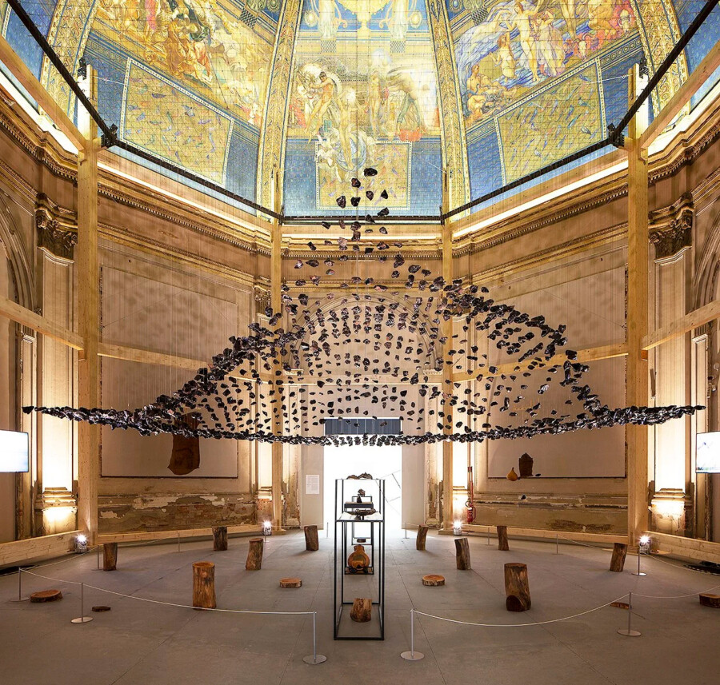

VOICES: Cave bureau
In partnership with the UIC School of Architecture.
The Nairobi-based architectural studio Cave bureau maintains a practice grounded in the belief that caves are the origins of architecture. Founded by Kabege Karanja and Stella Mutegi, the duo has returned to million-year-old caves in East Africa’s Great Rift Valley, 3-D scanning and translating them into spatial interventions that underscore their significance in human evolution and Kenya’s anti-colonial struggle for independence. Their roving, ten-part project, Anthropocene Museum, has featured installations that challenge Western museological models and proposals addressing varied subjects, including the effects of geothermal energy extraction on the pastoral Maasai community. Their collaborative curatorial presentation, Geology of Britannic Repair, at the British Pavilion at the 2025 Venice Architecture Biennial, was awarded a Special Mention for its examination of architecture, geology, and possibilities for renewal.
ACCESS INFORMATION: This program is free and open to the public. For questions and access accommodations, email gallery400engagement@gmail.com.
ABOUT
Stella Mutegi is an architect, co-founder and director of Cave bureau, an architectural and research firm based in Nairobi that she started alongside Kabage Karanja in 2014. She heads the technical department at Cave, where she orchestrates the seamless coordination of Cave’s ideas into built form. Since 2017, she has worked on Cave bureau’s research project The Anthropocene Museum, which has been exhibited in prestigious institutions around the world. In 2025, she was a co-curator for the British Pavilion at the 19th International Architecture Exhibition at La Biennale di Venezia, which got a special mention. Prior to that, Cave bureau has twice exhibited at both the 17th and 18th International Architecture Exhibition at La Biennale di Venezia, as well as in the final series of The Architects Studio at the Louisiana Museum of Modern Art in Denmark. Together with Kabage Karanja, she has given several lectures to students and presented talks in architectural symposiums around the world. Stella also writes on architecture and is regularly invited to review student work in universities around the world. In the Spring of 2025, she was the Louis I. Kahn Visiting Assistant Professor of Architectural Design at Yale University, together with Kabage Karanja.
SUPPORT
The talk is supported by the UIC Building Climate Resilient Spaces project with funding from the Frankenthaler Foundation Climate Initiative, the Richard Driehaus Foundation, and Chicago’s Department of Cultural Affairs and Special Events.